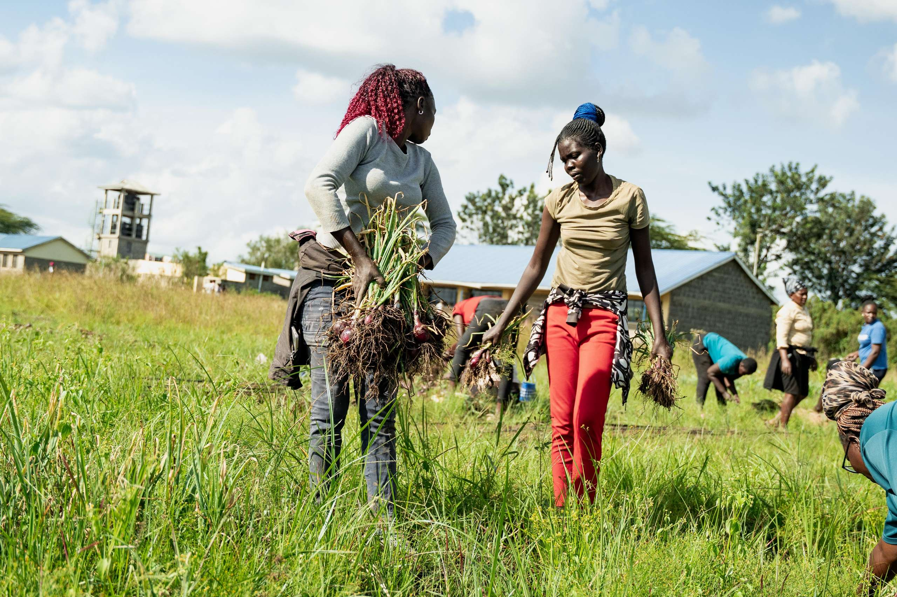

Most African schools already own the land. Almost none of it is farmed.
School Farm Network turns that land into professionally managed farms. The farms produce food, pay local wages, and give young people a real route into agriculture.

The land is not the missing piece. The operation is.
School grounds across the continent sit unplanted, not because the soil is poor or the demand is absent, but because nobody is running them. Farming a few acres well takes agronomy, working capital, buyers, wages, records and someone accountable for the result.
Programmes usually supply seeds and training and then leave. We run the farm.
One plot, run properly, then run again.
Every site follows the same eight stages, and every stage leaves a record. The record is what makes the next farm cheaper and better than the last.
Assess
Walk the site. Measure the ground that is free, check the water, confirm who holds the land, and agree what the school receives.
Design
Lay out beds, paths and irrigation against a crop chosen for the season and for a buyer who actually wants it.
Prepare
Clear, break and feed the soil. Install irrigation, storage and fencing. This is where most of the capital goes.
Plant
Plant to the design, on the date, at the spacing recorded.
Tend
Water, weed and watch. Paid crew, working to a schedule, with roles prioritised for women and for people aged 18 to 35.
Harvest
Lift, weigh and store. Nothing is claimed that was not weighed.
Account
What the cycle cost, what it produced, what it paid in wages, and what the school received.
Repeat
Change one thing and run it again. Carry what worked to the next school.
Seeds2Education, Kenya.
Our first project, and the site every part of the model was tested on. A second school has since joined a two-cycle pilot.


What we can show, and what we cannot yet.
We are early. One site has completed a full cycle. We would rather publish a short honest record than a long persuasive one.
First harvest
Approximately four tonnes of onions, lifted and weighed at Seeds2Education.
Source: harvest and weighing records. One site, one cycle. A pilot result, not portfolio performance.Sale and meals
The harvest is being sold to market. The proceeds will fund school meals through Food for Education. That payment has not been made yet, and we will say so here until it has.
Paid work
The farm is worked by a paid local crew, with roles prioritised for women and for people aged 18 to 35.
Cost per meal
We will publish it when we have measured it across a full cycle at more than one site. Until then we do not have a number worth quoting.
What we need, and from whom.
We are looking for a small number of serious partners rather than a wide audience.
Funders
Catalytic capital builds the infrastructure and buys the time to prove repeatability. It is the difference between one farm that works and a model that travels.
Talk to us about fundingSchools
You provide the land and receive an agreed benefit. You carry no operating cost and no commercial risk. Land rights, water and access all have to check out first.
Register a schoolBuyers
Demand shapes what we plant. Committed offtake at a fair price is worth more to these farms than most donations.
Discuss offtakeGovernments
Public school land, run to a standard, with the evidence published. If it works at ten sites it is worth discussing at a thousand.
Start a conversation